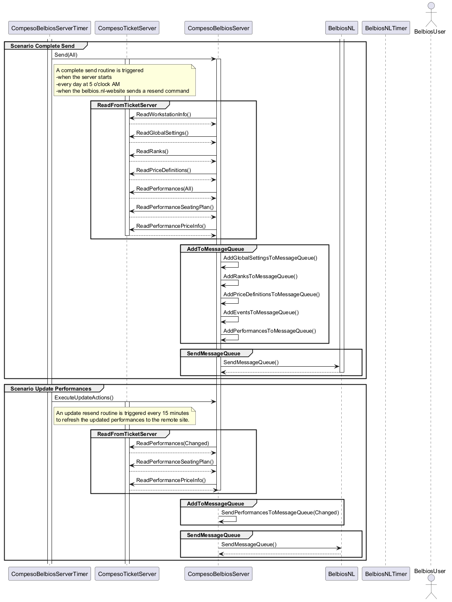

@startuml
participant CompesoBelbiosServerTimer
participant CompesoTicketServer
participant CompesoBelbiosServer
participant BelbiosNL
participant BelbiosNLTimer
actor BelbiosUser
group Scenario Complete Send
activate CompesoBelbiosServerTimer
CompesoBelbiosServerTimer -> CompesoBelbiosServer : Send(All)
note right of CompesoBelbiosServerTimer
A complete send routine is triggered
-when the server starts
-every day at 5 o'clock AM
-when the belbios.nl-website sends a resend command
end note
activate CompesoBelbiosServer
group ReadFromTicketServer
activate CompesoTicketServer
CompesoBelbiosServer -> CompesoTicketServer : ReadWorkstationInfo()
CompesoTicketServer --> CompesoBelbiosServer
CompesoBelbiosServer -> CompesoTicketServer : ReadGlobalSettings()
CompesoTicketServer --> CompesoBelbiosServer
CompesoBelbiosServer -> CompesoTicketServer : ReadRanks()
CompesoTicketServer --> CompesoBelbiosServer
CompesoBelbiosServer -> CompesoTicketServer : ReadPriceDefinitions()
CompesoTicketServer --> CompesoBelbiosServer
CompesoBelbiosServer -> CompesoTicketServer : ReadPerformances(All)
CompesoTicketServer --> CompesoBelbiosServer
CompesoBelbiosServer -> CompesoTicketServer : ReadPerformanceSeatingPlan()
CompesoTicketServer --> CompesoBelbiosServer
CompesoBelbiosServer -> CompesoTicketServer : ReadPerformancePriceInfo()
CompesoTicketServer --> CompesoBelbiosServer
deactivate CompesoTicketServer
end group
group AddToMessageQueue
CompesoBelbiosServer -> CompesoBelbiosServer : AddGlobalSettingsToMessageQueue()
CompesoBelbiosServer -> CompesoBelbiosServer : AddRanksToMessageQueue()
CompesoBelbiosServer -> CompesoBelbiosServer : AddPriceDefinitionsToMessageQueue()
CompesoBelbiosServer -> CompesoBelbiosServer : AddEventsToMessageQueue()
CompesoBelbiosServer -> CompesoBelbiosServer : AddPerformancesToMessageQueue()
end group
group SendMessageQueue
activate BelbiosNL
CompesoBelbiosServer -> BelbiosNL : SendMessageQueue()
BelbiosNL --> CompesoBelbiosServer
deactivate BelbiosNL
end group
end group
group Scenario Update Performances
CompesoBelbiosServerTimer -> CompesoBelbiosServer : ExecuteUpdateActions()
note right of CompesoBelbiosServerTimer
An update resend routine is triggered every 15 minutes
to refresh the updated performances to the remote site.
end note
group ReadFromTicketServer
activate CompesoTicketServer
CompesoBelbiosServer -> CompesoTicketServer : ReadPerformances(Changed)
CompesoTicketServer --> CompesoBelbiosServer
CompesoBelbiosServer -> CompesoTicketServer : ReadPerformanceSeatingPlan()
CompesoTicketServer --> CompesoBelbiosServer
CompesoBelbiosServer -> CompesoTicketServer : ReadPerformancePriceInfo()
CompesoTicketServer --> CompesoBelbiosServer
deactivate CompesoBelbiosServer
end group
group AddToMessageQueue
CompesoBelbiosServer -> CompesoBelbiosServer : SendPerformancesToMessageQueue(Changed)
end group
group SendMessageQueue
activate BelbiosNL
CompesoBelbiosServer -> BelbiosNL : SendMessageQueue()
BelbiosNL --> CompesoBelbiosServer
deactivate BelbiosNL
end group
end group
@enduml